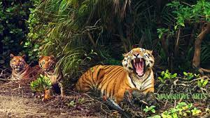
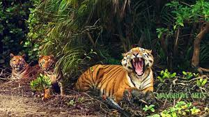

Quiet, largely residential Mirpur is anchored by the Bangladesh National Zoo, with residents including Bengal tigers, elephants, and Asiatic black bears. A bird enclosure is home to peacocks and emus. The adjacent National Botanical Garden, which features a bamboo grove and a cactus house, is popular for walks along its tree-shaded paths. Test matches take place at the Sher-e-Bangla National Cricket Stadium. ― Google Area: 58.66 km² Postal Code: 1216 Division: Dhaka Division Mirpur Model Thana, a locality in Dhaka Mirpur DOHS, a neighbourhood of Dhaka Mirpur Stadium or Sher-e-Bangla National Cricket Stadium, Dhaka Mirpur Upazila in Kushtia District Mirpur Thana, former name of Mirpur Upazila (until 1983) Mirpur College Private College in Bangladesh. Mirpur er amar prio jayga Mirpur 10, karon okhanei amar jonmo ebong bere otha. Amar shokol bondhu bandhob ebog amar poribar sobai oikhane thake. Amar school o Mirpur e. Tai ami alwyas Mirpur ke First prioriti die thaki. Okhankar "Sawkat er chap er dokan onek beshi miss kori," "Chandur neheri onek moja." "Mirpur er chiria khana to shobai chine"


Sajek Valley is an emerging tourist spot in Bangladesh situated among the hills of the Kasalong range of mountains in Sajek union, Baghaichhari Upazila in the Rangamati District. The valley is 1,476 feet (450 m) above sea level. Sajek valley is known as the Queen of Hills & Roof of Rangamati. Pahar, gash, pani, mati and onek kisu.Pahar, gash, pani, mati and onek kisu.Pahar, gash, pani, mati and onek kisu.Pahar, gash, pani, mati and onek kisu.Pahar, gash, pani, .
 

Sundarbans is a mangrove area in the delta formed by the confluence of the Ganges, Brahmaputra and Meghna Rivers in the Bay of Bengal. It spans the area from the Hooghly River in India's state of West Bengal to the Baleswar River in Bangladesh's division of Khulna. It comprises closed and open mangrove forests, land used for agricultural purpose, mudflats and barren land, and is intersected by multiple tidal streams and channels. Four protected areas in the Sundarbans are enlisted as UNESCO World Heritage Sites, viz. Sundarbans National Park, Sundarbans West, Sundarbans South and Sundarbans East Wildlife Sanctuaries.[3] Despite these protections, the Indian Sundarbans were considered endangered in a 2020 assessment under the IUCN Red List of Ecosystems framework.[4] The Sundarbans mangrove forest covers an area of about 10,000 km2 (3,900 sq mi), of which forests in Bangladesh's Khulna Division extend over 6,017 km2 (2,323 sq mi) and in West Bengal, they extend over 4,260 km2 (1,640 sq mi) across the South 24 Parganas and North 24 Parganas districts.[5] The most abundant tree species are sundri (Heritiera fomes) and gewa (Excoecaria agallocha). The forests provide habitat to 453 fauna wildlife, including 290 bird, 120 fish, 42 mammal, 35 reptile and eight amphibian species.[6] Despite a total ban on all killing or capture of wildlife other than fish and some invertebrates, it appears that there is a consistent pattern of depleted biodiversity or loss of species in the 20th century, and that the ecological quality of the forest is declining.[7] Despite preservation commitments from both governments, the Sundarbans are under threat from both natural and human-made causes. In 2007, the landfall of Cyclone Sidr damaged around 40% of the Sundarbans. The forest is also suffering from increased salinity due to rising sea levels due to climate change and reduced freshwater supply. In May 2009 Cyclone Aila devastated the Sundarbans with massive casualties. At least 100,000 people were affected by this cyclone.[8][9] The proposed coal-fired Rampal power station situated 14 km (8.7 mi) north of the Sundarbans at Rampal Upazila of Bagerhat District in Khulna, Bangladesh, is anticipated to further damage this unique mangrove forest according to a 2016 report by UNESCO.[10] Climate change is expected to both continue to negatively effect both natural systems and human populations in the region, resulting in further ecosystem degradation and climate migration. Experts examining the region recommend further focus on mangrove restoration and management and advocating for adaptation of human populations, through processes like managed retreat and investments in resilient infrastructure.[11]. Amra ghurlam, onek moja koresi. kintu Abbur kase onek boka khaisi Amra ghurlam, onek moja koresi. kintu Abbur kase onek boka khaisiAmra ghurlam, onek moja koresi. kintu

St. Martin's Island (Bengali: সেন্ট মার্টিন্স দ্বীপ) is a small island (area only 3 km2) in the northeastern part of the Bay of Bengal, about 9 km south of the tip of the Cox's Bazar-Teknaf peninsula, and forming the southernmost part of Bangladesh. There is a small adjoining island that is separated at high tide, called Chera Dwip. It is about 8 kilometres (5 miles) west of the northwest coast of Myanmar, at the mouth of the Naf River. Contents 1 History and description 2 Administration 3 Inhabitants 4 Biological diversity and bioprospecting potential of Saint Martin's Island 5 Transportation 6 Tourism 7 Sovereignty dispute and shootings of St. Martin's fishermen 8 Climate and weather 9 Gallery 10 See also 11 References 12 Sources 13 External links History and description Millennia ago, the island used to be an extension of the Teknaf peninsula, but at a later time some portion of this peninsula got submerged and thus the southernmost part of the aforementioned peninsula became an island, and was disconnected from the Bangladesh mainland. The first settlement started 250 years ago, in 18th century, by Arabian merchants who named the island 'Jazira'. During British occupation the island was named after the then Deputy Commissioner of Chittagong Mr. Martin as St. Martin Island. Likely because one or more of the Arabs were Saint and whose name could not be identified. Local names of the island are "Narikel jinjira"[3] which means 'Coconut Island', and "Daruchini Dwip" which means "Cinnamon island". It is the only coral island in Bangladesh. Amra ghurlam, onek moja koresi. kintu Abbur kase onek boka khaisi Amra ghurlam, onek moja koresi. kintu Abbur kase onek boka khaisiAmra ghurlam, onek moja koresi. kintu